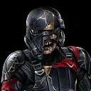
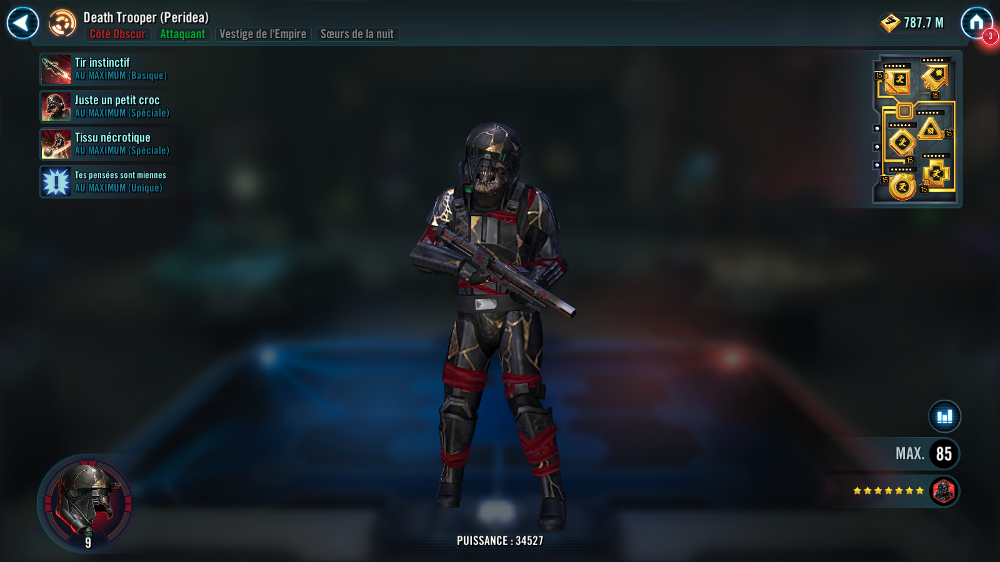
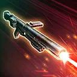
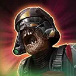

Death Trooper (Peridea)
A relentless Attacker whose efforts to destroy the enemy are persistent, even after death

A relentless Attacker whose efforts to destroy the enemy are persistent, even after death


Deal Physical damage to target enemy with a 40% chance to inflict a stack of Blight, which can't be copied or dispelled, until the end of the encounter. If the target enemy already had Blight, this attack deals double damage. If this attack scores a critical hit, all Imperial Remnant allies gain Offense Up for 1 turn. Otherwise, Death Trooper (Peridea) gains Critical Chance Up for 1 turn.
While in Territory Wars and if Death Trooper (Peridea) has their Omicron activated: gain 5 stacks of Siphon when this ability is used.

Deal Physical damage to target enemy and inflict Blight, which can't be dispelled, until the end of the encounter or until they recover to full Health. If the target enemy already had Blight, also inflict 2 stacks of Damage Over Time for 2 turns and remove 5% Turn Meter from the target enemy 3 times. If this ability takes an enemy below 10% Health, instantly defeat them (excluding raid bosses and Galactic Legends). If this ability defeats an enemy, Death Trooper (Peridea) gains a bonus turn and this ability's cooldown is reset.
Omicron Boost : While in Territory Wars and if all allies are Imperial Remnant or Nightsister at the start of battle : Death Trooper (Peridea) Siphons Critical Damage from the target enemy, which can't be resisted. If this ability takes an enemy below 20% Health, instantly defeat them (excluding raid bosses and Galactic Legends). If the target enemy already had Blight, also inflict Armor Shred until the end of battle.
While this Omicron is active, Firing by Rote and Necrotic Tissue gain additional effects.
Siphon Critical Damage: Gain a percentage of Critical Damage equal to this unit's Siphon until the end of the encounter and the target loses that much Critical Damage (stacking, excludes raid bosses and Galactic Legends)
Deal Physical damage to all enemies and inflict Offense Down and Tenacity Down for 2 turns. If the ally in the Leader slot is an Imperial Remnant Support, dispel all buffs from all enemies. If the target enemy already had Blight, inflict a stack of Blight, which can't be dispelled, on a random enemy that doesn't already have it until the end of the encounter or until they are restored to full Health. All allies gain Offense Up and Speed Up for 2 turns.
While in Territory Wars and if Death Trooper (Peridea) has his Omicron activated: this ability deals additional damage equal to 40% of his Critical Damage and if the ally in the Leader slot is an Imperial Remnant Support, Death Trooper (Peridea) gains 10 stacks of Siphon for each debuff inflicted by this ability.
Death Trooper (Peridea) gains 25 Speed. Imperial Remnant allies have +35% Critical Chance and Offense. Nightsister allies have +35% Max Health and Max Protection.
If the ally in the Leader slot is not an Imperial Remnant Tank, whenever an Imperial Remnant ally is Dazed, Stunned, Shocked, or inflicted with Speed Down, all Imperial Remnant allies gain 15 Speed (stacking, max 60) for the rest of the battle. Whenever an Imperial Remnant ally is critically hit, remove 3% Turn Meter from all enemies. Death Trooper (Peridea) gains 5% Turn Meter (stacking) for each stack of Blight inflicted on an enemy.